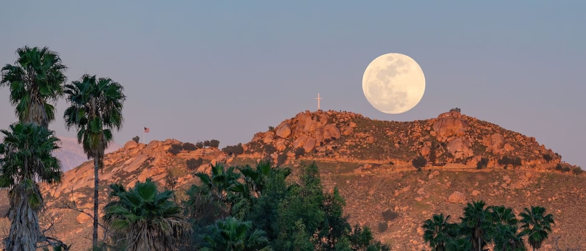
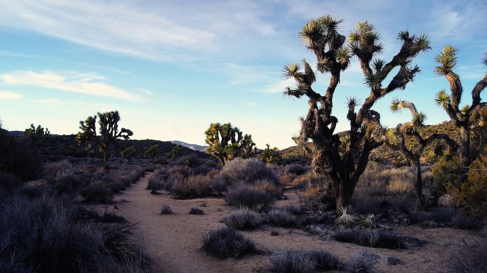
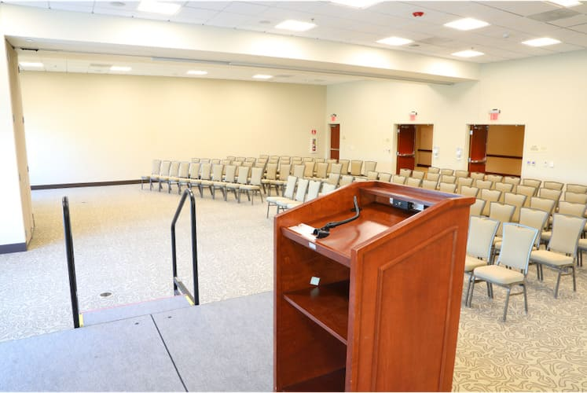

ACM SIGSPATIAL 2026
The 3rd ACM SIGSPATIAL International Workshop on Geospatial Anomaly Detection.



November 03, 2026
Riverside, CA • Convention Center
The 3rd ACM SIGSPATIAL International Workshop on Geospatial Anomaly Detection (GeoAnomalies’26) is dedicated to assembling leading researchers and esteemed industry experts to examine the latest advancements, formidable challenges, and compelling applications within the crucial domain of anomaly detection for spatial, geospatial, and spatiotemporal data. This workshop is passionately designed to cultivate profound collaboration and extensive knowledge sharing among participants from a comprehensive array of research fields—including machine learning, time series analysis, statistics, remote sensing, geospatial analysis, and trajectory analysis.
Download the printable Call for Papers (PDF).
We accept papers addressing issues related to, but not limited to, the following topics:
The workshop seeks high-quality full (8-10 pages) and short (4 pages) papers that have not been published in other academic outlets and are not concurrently under peer review.
Accepted GeoAnomalies’26 papers will appear in the SIGSPATIAL’26 Proceedings. Therefore, we follow the same formatting requirements as SIGSPATIAL'26 which can be found on the Submission Information.
Submissions to ACM SIGSPATIAL are single-blind. – i.e., the names and affiliations of the authors should be listed in the submitted version. The author list is considered to be final after the submission deadline and no changes to the author list are allowed for accepted papers.
Once accepted, at least one author is required to register for the workshop and the ACM SIGSPATIAL conference, as well as attend the workshop to present the accepted work which will then appear in the ACM Digital Library.
Paper Submission
August 9, 2026
Author Notification
September 11, 2026
Camera-Ready
October 10, 2026
Joon-Seok Kim
Emory University, USA
Peer Kröger
University of Kiel, Germany
Khurram Shafique
Novateur Research Solutions, USA
Carola Wenk
Tulane University, USA
Andreas Züfle
Emory University, USA
Alberto Belussi
University of Verona, Italy
Yao-Yi Chiang
University of Minnesota, USA
Qunying Huang
Emory University, USA
Krzysztof Janowicz
University of Vienna, Austria
Yong Li
Tsinghua University, China
Yuxuan Liang
Hong Kong University of Science and Technology, HKSAR
Andreas Lohrer
University of Kiel, Germany
Kyriakos Mouratidis
Singapore Management University, Singapore
Martin Raubal
ETH Zurich, Switzerland
Chris Ovi Rouly
Maelzel Inc, USA
Flora Salim
UNSW, Australia
Erich Schubert
Technical University of Dortmund, Germany
Cyrus Shahabi
University of Southern California, USA
Li Xiong
Emory University, USA
Kaiqi Zhao
University of Auckland, Australia
Yueyang Liu
Emory University, USA